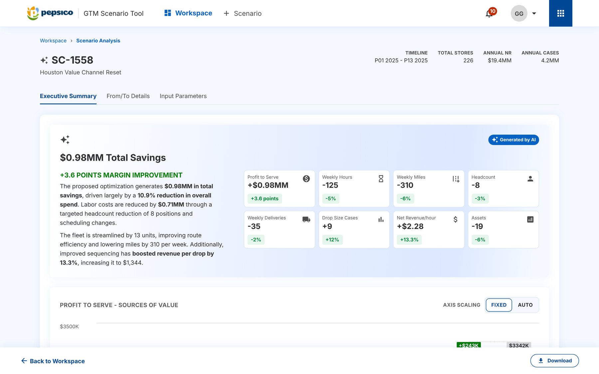
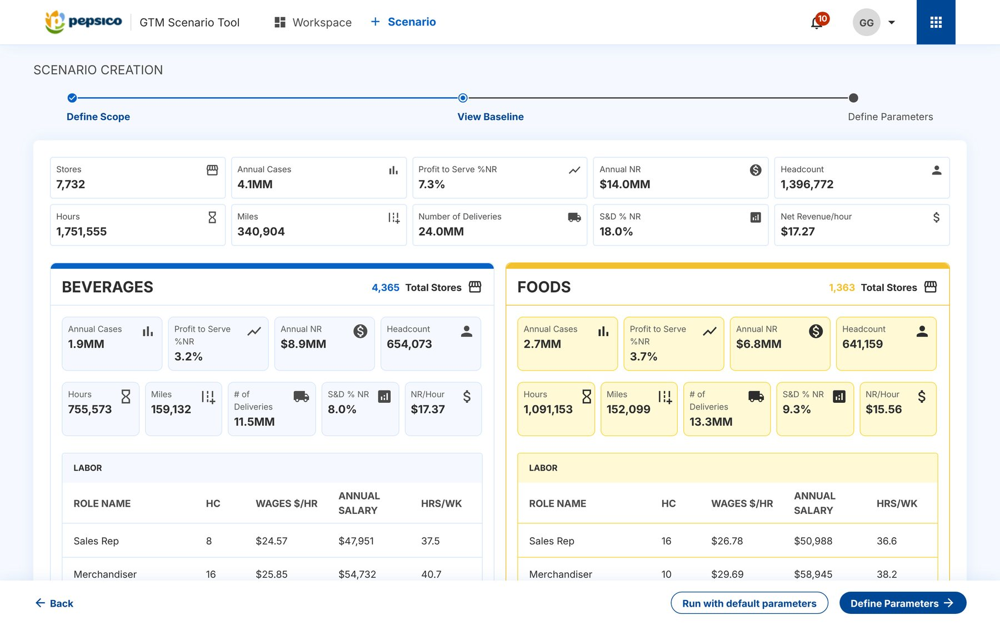
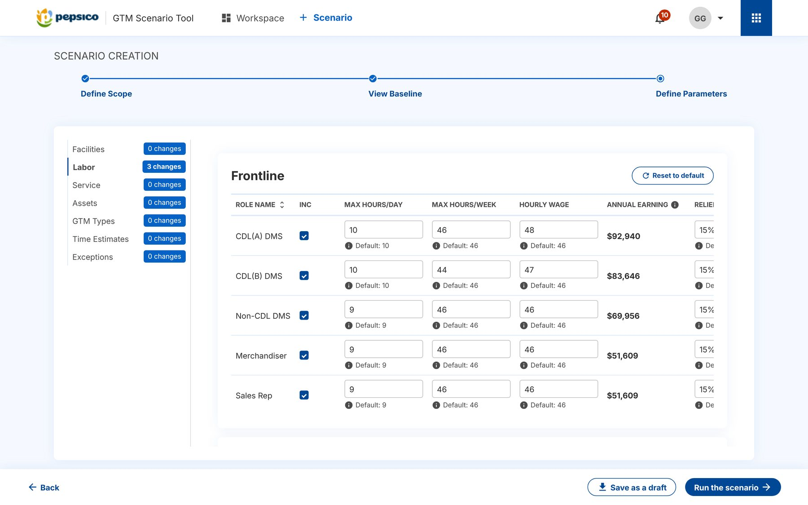
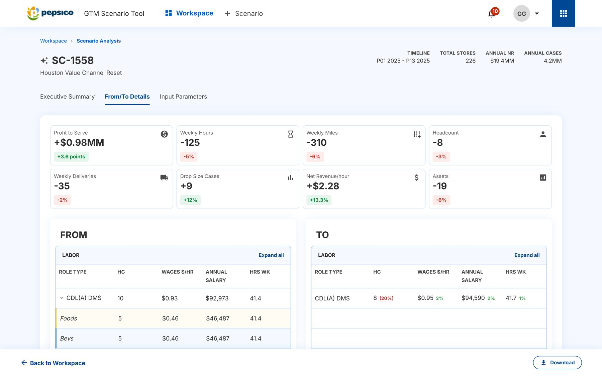
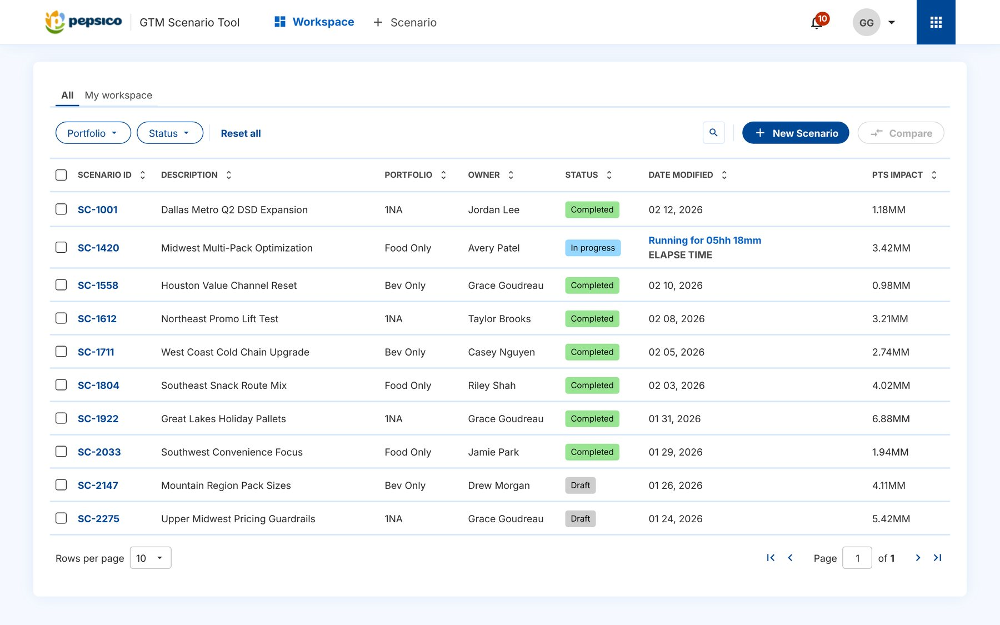

Scoping Pro · PepsiCo × Google Cloud
I designed for what the technology can do today, and set it up to become predictive.
Scoping Pro is PepsiCo’s profit-to-serve planning tool: it shows what it costs, and what it earns, to serve each store. We built it with Google Cloud as PepsiCo combined its food and beverage delivery networks. I led UX for PepsiCo: scenario inputs, baseline views, comparisons, and a coded prototype of the full flow.
Planning per location: about 3 days → under 1 hour

Results: the AI explains, the numbers prove it
- Clearly labeled “Generated by AI,” because research asked for that distinction.
- A plain-language summary of what changed and why.
- Every claim in the summary sits next to the driver tile that proves it.
In 30 seconds
Planning the combined food and beverage delivery network took a roughly 40-tab spreadsheet and days of work.
Build today’s workspace so it scales into tomorrow’s predictive model.
The goal is predictive, but a model needs real data to train on. Phase 1 lays the groundwork and proves the foundations first.
Planning time per location went from about 3 days to under 1 hour.
The situation
Combining two delivery networks meant planning at a level the spreadsheets couldn’t reach.
Go-to-market planners had to model one combined direct-store-delivery network: stores, routes, drivers, merchandisers, fleet and P&L. Their tools were broad averages and a spreadsheet process that took days or weeks. The new tool had to reach store-level precision without becoming a black box: planners still needed to check every assumption.
What I inherited, and what I did
- 94opportunities from the innovation workshops, narrowed to 3 use cases
- 18concepts from a joint design sprint
- 5research sessions with planners and executives on the sprint prototype
- 8research findings designed into the product
- 4weeks to a coded prototype of the full flow
- 24prototype iterations reviewed with Google and PepsiCo
- 400model experiments across 2 test markets
- 1engine that can run any US market at store level
- <1 hrto plan a location, down from about 3 days
The question behind every decision
How do we make sure what we build today scales into what this needs to become?
The ambition was predictive. But a model needs real planning runs to learn from, and planners would only trust its suggestions if they already trusted the numbers. So we designed in three horizons.
Scope, baseline, parameters and full P&L impact. AI explains finished runs.
Every change is recorded against its default. Built so planners see what they changed, it also shows the model which changes they actually make.
Suggested inputs and scenarios, learned from real runs.
Designing for what the technology can do today
The routing model solves store-level schedules, so runs continue in the background with live status. Planners keep working.
Quick changes like wages update instantly; structural changes go into a full model run.
The sprint’s most-voted ideas were AI features. Phase 1 shipped one: plain-language summaries of finished runs.
Accuracy and attribution were open questions, so every result traces back to its inputs and sources of value.
Strategic decisions
AI explains today; it predicts later
ChoseWith Google’s PM and engineers, we shipped AI-written summaries of finished runs, labeled and placed beside the numbers they describe.
Said no toAI-suggested inputs and recommended scenarios before the model had real runs to learn from, even though they were the sprint’s most popular ideas.
Baseline before change, defaults always visible
ChoseI designed the flow as scope, then baseline, then parameters. Every input shows its baseline value, each category counts its changes, roles switch on and off, and “Run with default parameters” gets first-timers a result fast.
Said no toHiding baselines behind clicks, or letting people change inputs before they’ve seen the current state.
The summary and the proof, side by side
ChoseI designed three views of every run: Executive Summary, From/To Details and Input Parameters, with P&L in dollars, % of net revenue and $ per case.
Said no toChoosing between an AI summary and raw tables. Research was split, so both audiences get their view.
What research changed
Five planners and executives tested the sprint prototype. I turned their findings into product behavior in a coded prototype.
“How do I sense check it? There’s nothing here that tells me I didn’t plan a 24-hour day… It’s pure trust.”Go-to-market planner, January 2026 research
The product
Screens from my coded prototype, each showing a decision.

Baseline: see the current state before changing anything
- Foods and Beverages side by side, each with its own KPIs, labor, fleet and P&L.
- Labor split by real route roles, not one average.
- “Run with default parameters” gives first-time users a result without touching an input.

Parameters: every change is visible and reversible
- Each category counts its changes, so a scenario summarizes itself.
- Roles switch in or out of the solve, as planners asked.
- The baseline value sits under every input, one click from reset.

From/To: the analyst’s proof
- Three views of every run for three audiences.
- Driver tiles show what moved and by how much.
- From and To tables side by side, split by Foods and Bevs.

Workspace: scenarios are owned, tracked objects
- A description on every scenario, because IDs meant nothing to users.
- Long model runs continue in the background with live status.
- Profit-to-serve impact at a glance, without opening each scenario.
Domain translation
A powerful model only creates value when it speaks the language of the people deciding.
Working with Google Cloud
A full product team: a UX designer I designed alongside, a product manager, and the AI, data, cloud and routing engineers behind the model.
How planners actually work, sanity-check and present results: the roles, the language, the finance conventions and what makes a number trustworthy.
One joint team, working day to day, kept honest by weekly demos and bug bashes across both companies.
Outcome
~3 days → under 1 hr
Planning time per location, as reported at project closeout, with analysis moving from broad estimates to store-level precision. The closeout credits formula transparency with removing the black-box concern and securing trust to scale across North America. That transparency is what the inputs, baseline and From/To views I designed are built around.
Status: shipped and now in Phase 1.5. Predictive guidance is a later phase.
Reflection
Domain knowledge is a design capability.
It’s what helps a joint team tell a technically possible solution from one people will trust and defend. And designing honestly for what the technology can do today is what makes the ambitious version possible later.